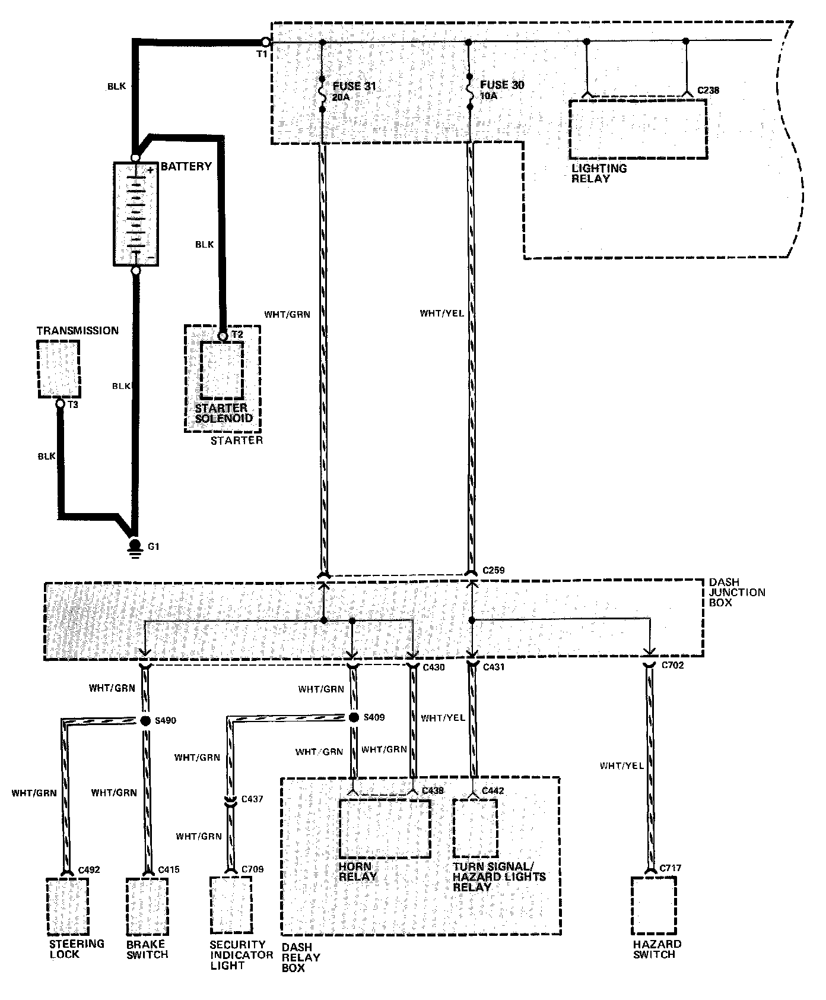
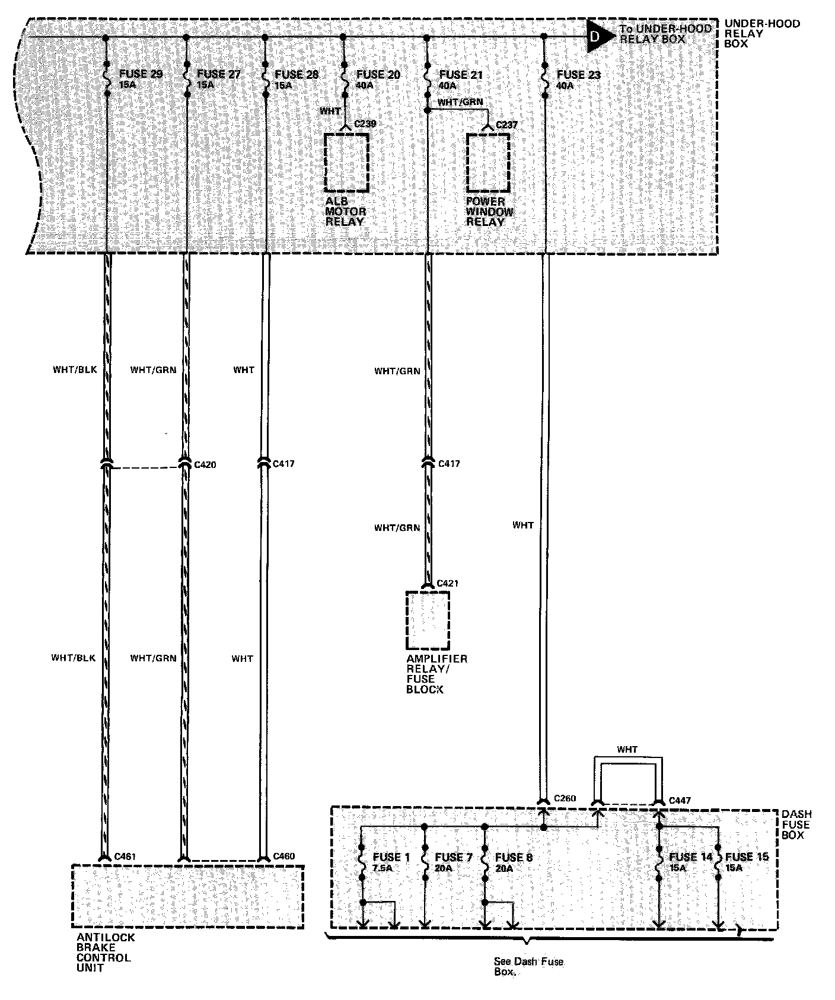
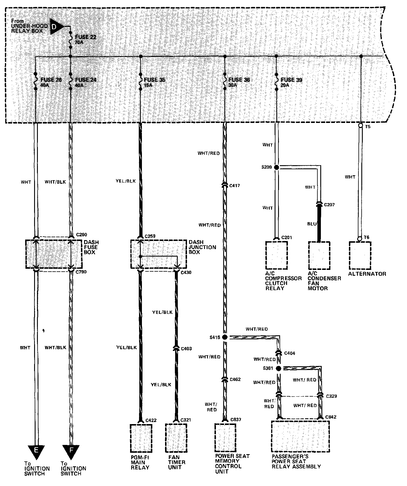
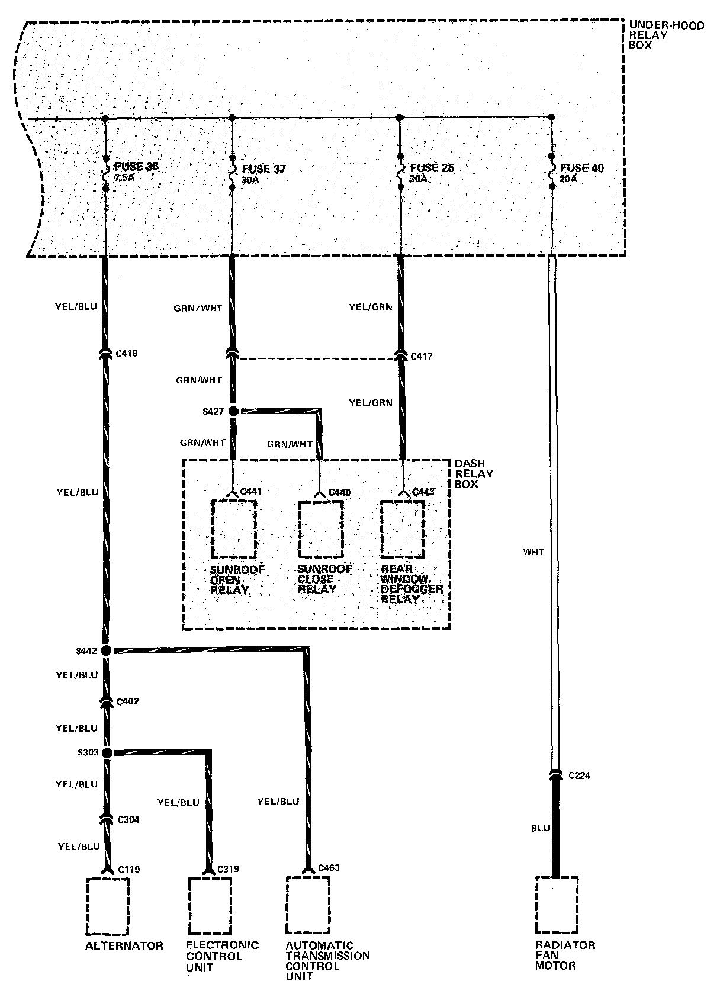
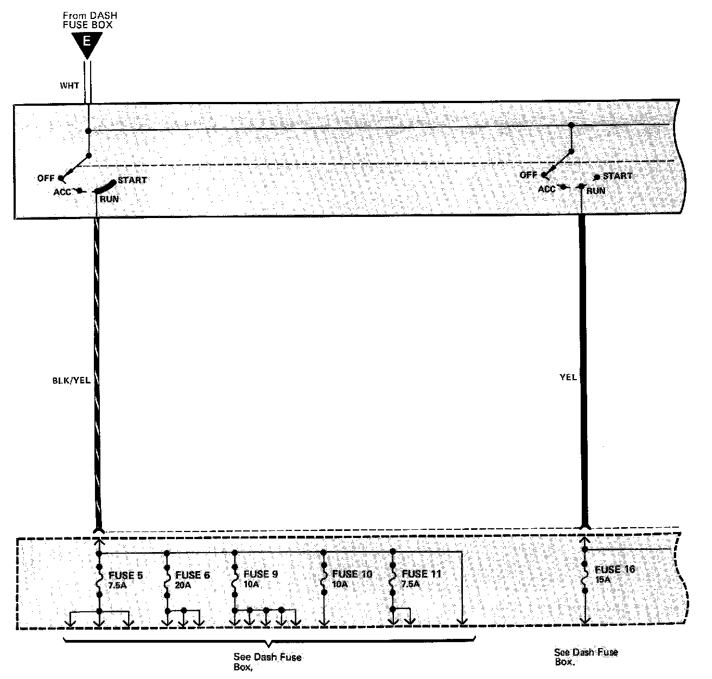
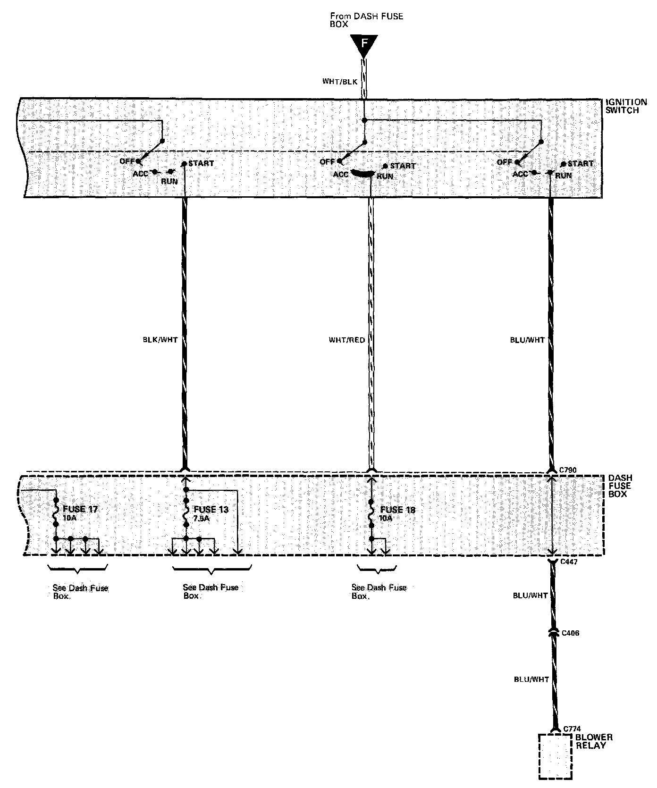

Operation CHARM
: Car repair manuals for everyone.
Home
>>
Acura
>>
1989
>>
Legend Sedan V6-2675cc 2.7L SOHC FI
>>
Repair and Diagnosis
>>
Diagrams
>>
Electrical Diagrams
>>
Power and Ground Distribution
>>
Power Distribution
>>
Circuit Diagram
Circuit Diagram
Part 1 Of 6:

Part 2 Of 6:

Part 3 Of 6:

Part 4 Of 6:

Part 5 Of 6:

Part 6 Of 6:
